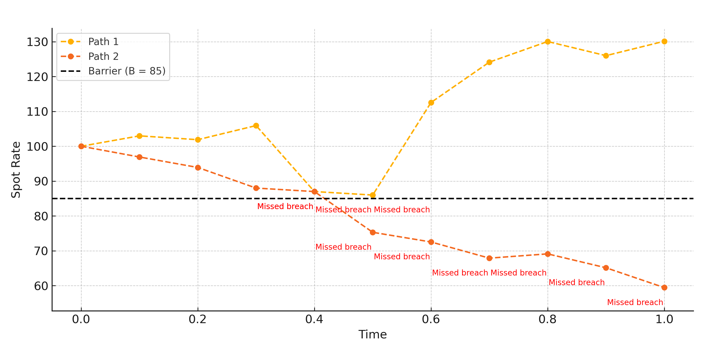

Preface
This paper grew out of a longer-standing interest I’ve had in using simulation to solve problems where closed-form solutions break down. I’d studied European option pricing before, but barrier options seemed like a natural next step—technically richer, more sensitive to model structure, and deeply rooted in practical finance.
My goal was to understand the complications of pricing path-dependent derivatives and experiment with methods that mitigate the well-known challenges of simulating rare path behavior. I wanted to implement everything from scratch—model, paths, controls, even variance reduction—both to understand how they work and to explore the limits of pure simulation.
Modeling the FX Rate
To simulate barrier options in an FX setting, I modeled the spot rate under two stochastic processes. First, I implemented the classical geometric Brownian motion (GBM) model, which assumes constant volatility and continuous compounding. Then, to incorporate more realistic volatility seen in FX markets, I extended the simulation to include the Heston model, which introduces a stochastic variance component following its own mean-reverting process.

Sample paths of the FX spot rate under geometric Brownian motion used in Monte Carlo simulation.
Using Monte Carlo simulation, I generated thousands of synthetic price paths and computed expected payoffs. However, simulating barrier options naively introduces significant variance and discretization bias, especially when monitoring is discrete.
Variance Reduction
Monte Carlo simulation has a notoriously high computation cost and high variance. To work around this, I looked into variance reduction strategies as well. I first decided on antithetic variates, which seemed trivial to implement but extremely beneficial for reducing variance; for each simulated path, I mirrored its Brownian motion with a negatively correlated twin, which alone helped tighten the confidence intervals. Perhaps more importantly, though, is that the discontinuity in naive simulations can often lead to missing a barrier breach, as monitoring typically isn't continuous.
To fix this, I implemented Brownian bridge interpolation, which estimates the likelihood of the barrier being breached between discrete time steps. Conceptually, it "fills in the gaps" in each path, which makes the simulation more robust. When interpolated, paths that initially appeared to survive might reveal that they likely crossed the barrier after all.
Two FX paths (dashed) that survive discrete monitoring yet likely breach the barrier when interpolated. Brownian bridge adjustment penalizes these cases.
Results
Once everything was in place, I ran a variety of experiments across both knock-in and knock-out options under different volatilities, interest rate spreads, and barrier levels. I started with the geometric Brownian motion (GBM) model and compared those results to the more nuanced Heston model with stochastic volatility.
One thing worth mentioning is that the barrier’s relative distance from the current spot price had a noticeably huge influence, almost more so than the volatility itself. When the barrier was set just outside the likely range of the simulated paths, small changes in volatility or monitoring frequency could engender vast shifts in the payoff probability.
Reflection
This project was a test of both my modeling intuition and coding precision. Writing a pricing engine from scratch—one that balanced theoretical rigor with practical speed—wasn’t easy. But I walked away with a stronger sense of how real-world derivatives get priced, and why the simplest models often hide the deepest challenges.
If you're interested in the full implementation, feel free to check out the paper I wrote using one of the links below.